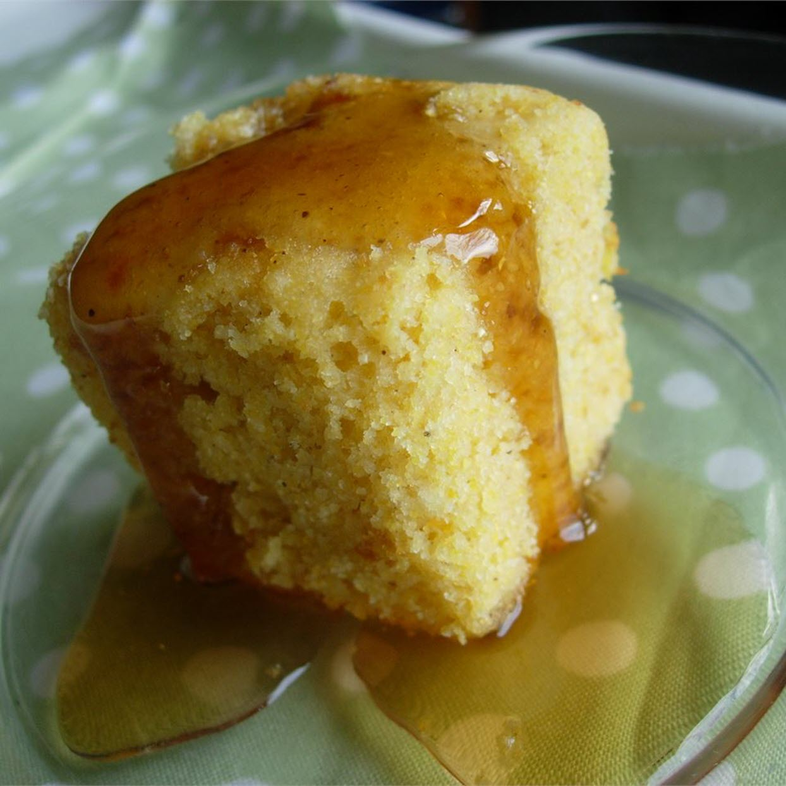

Golden Sweet Cornbread

Description
If you like sweet cornbread, this is the recipe for you! My mom made this for me as a child, and now it's my
family's favorite.
It will take 10 mins to prepare your ingredients and 25 mins to cook your dish. Overall it is 35 mins of cooking.
Ingredients
- 1 cup all-purpose flour
- 1 cup yellow cornmeal
- 2/3 cup white sugar
- 1 teaspoon salt
- 3,5 teaspoons baking powder
- 1 egg
- 1 cup milk
- 1/3 cup vegetable oil
Steps
- Preheat oven to 400 degrees F (200 degrees C). Spray or lightly grease a 9 inch round cake pan.
- In a large bowl, combine flour, cornmeal, sugar, salt and baking powder. Stir in egg, milk and vegetable oil until well combined. Pour batter into prepared pan.
- Bake in preheated oven for 20 to 25 minutes, or until a toothpick inserted into the center of the loaf comes out clean.